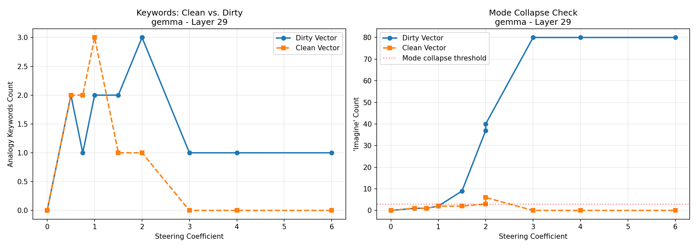
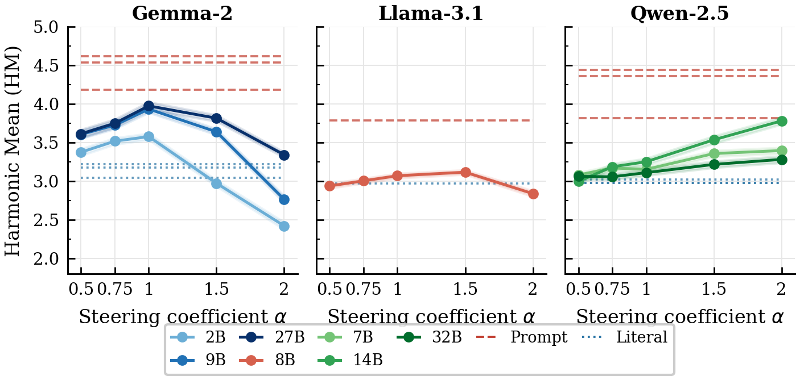
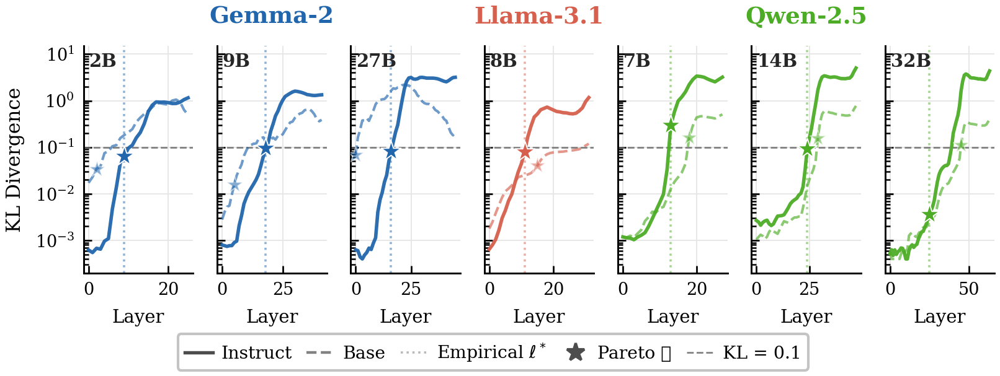

Language models do not merely memorize facts—they absorb rhetorical strategies from pretraining data, including the human tendency to reason by analogy. We ask: is this absorbed capability geometrically accessible before any instruction tuning, and what determines whether it can be activated at inference time?
We extract an “Analogy Vector” from the residual stream via difference-in-means and show it enables steerable explanation style across seven instruction-tuned models (Gemma-2, Llama-3.1, Qwen-2.5; 2B–32B), improving harmonic mean from 3.22 to 3.94 (+22%) for Gemma-2-9B-IT on 299 held-out test prompts.
Our central finding, from seven matched base–instruct pairs, is a gradient of causal wiring: the analogy direction exists in every base model, but its behavioral accessibility scales continuously with instruction exposure during training. Gemma-2 base models (strict pretraining/IT separation) show flat steering landscapes—present but causally inert. Qwen-2.5 base models (instruction data woven into pretraining) are already partially wired before any explicit fine-tuning.
TL;DR. Geometry is not enough. Whether a latent rhetorical direction can move behavior depends on how much instruction exposure the model has already seen.
Gradient of causal wiring. The analogy direction exists in every base model, but accessibility scales with instruction exposure across the full training pipeline—not a binary base vs. instruct switch.
KL as a wiring diagnostic. KL divergence under steering reveals whether an intervention pathway exists even when output quality is low, tracking the wiring gradient without requiring instruction-following.
Orthogonalization fixes collapse. At high α, lexical entanglement with “Imagine” causes mode collapse. Projecting it out cuts collapse 75–92% while preserving steering effectiveness.
Steering as interpretability lever. Explicit prompting remains strongest (~4.4/5). We position activation steering as a complementary, training-free tool for amplifying latent rhetorical strategies.
Browse all 299 held-out test prompts across fourteen models. Compare unsteered literal generation, steered clean-vector output at the paper’s operating α, and an explicit prompting baseline—scored with the same three-metric judge used in the paper (AQ / FL / IF → HM).
Loading examples…
We extract an Analogy Vector by difference-in-means on a domain-balanced ELI5 contrast set, intervene on the residual stream, and orthogonalize against lexical triggers that cause mode collapse—following the single-direction approach of Arditi et al. (2024).
Extract: vanalogy = μanalogy − μliteral
Steer: x′L = xL + α · vanalogy
Clean: vclean = v − projdImagine(v)
Evaluation uses a three-metric LLM-as-a-judge setup (Analogy Quality, Fluency, Instruction-Following) with harmonic mean following AxBench. All reported results use the clean vector on 299 held-out test prompts.

Orthogonalization reduces mode collapse while preserving steering effectiveness.
Steering selectively lifts analogy quality across seven IT models. The α-response shape and KL landscapes corroborate the same wiring gradient.
| Model | Literal HM | Steered HM | ΔHM | Best α |
|---|---|---|---|---|
| Gemma-2-2B-IT | 3.04 | 3.58 | +0.53 | 1.0 |
| Gemma-2-9B-IT | 3.22 | 3.94 | +0.71 | 1.0 |
| Gemma-2-27B-IT | 3.18 | 3.98 | +0.80 | 1.0 |
| Llama-3.1-8B-IT | 2.97 | 3.12 | +0.15 | 1.5 |
| Qwen-2.5-7B-IT | 3.02 | 3.40 | +0.38 | 2.0 |
| Qwen-2.5-14B-IT | 2.98 | 3.78 | +0.81 | 2.0 |
| Qwen-2.5-32B-IT | 2.98 | 3.28 | +0.31 | 2.0 |
Steered = neutral prompt + clean analogy vector at the empirically best layer. SEM ≤ 0.06.

Gemma-2 peaks at α ≈ 1.0 then collapses; Qwen-2.5 improves monotonically through α = 2.0.

KL under steering as a model-agnostic probe of pre-existing causal wiring.
A single residual-stream direction obtained by difference-in-means between analogical and literal explanation prompts. Adding it at a chosen layer (x′ = x + α · v) biases the model toward analogy-making even on neutral prompts.
Yes geometrically—in every base model we studied. But causal efficacy is not binary: Gemma-2 bases are causally inert under steering, while Qwen-2.5 bases (instruction data in pretraining) are already partially wired.
At high coefficients the vector’s lexical component collapses generation into “Imagine …” loops. Removing the Imagine unembedding direction preserves the semantic signal and restores fluent steered text.
No. Prompting remains the strongest practical method. Steering is useful as an interpretability probe of rhetorical geometry and as a prompt-composable inference-time lever when the direction is already wired.
Last-token residual activations for all 1,000 v5 concept pairs, across all 14 paper models (7 instruct + 7 base) at each empirical l*. Literal / analogy clouds visualize the linear contrast; means and the clean vector follow the paper’s train-set difference-in-means. See PCA_FINDINGS.md for interpretation notes.
Loading models…
Drag to rotate · scroll to zoom · double-click to reset. PCA is fit per model on last-token residuals at paper l*; μ and vector overlays use the train split.
Try the vector. Hugging Face Space with side-by-side literal vs. steered generation.
@inproceedings{analogyvector2026,
title = {From Geometry to Causality: How Instruction Exposure
Wires Up Latent Rhetorical Directions in LLMs},
author = {Xu, Shengjie},
booktitle = {Conference on Language Modeling (COLM)},
year = {2026}
}